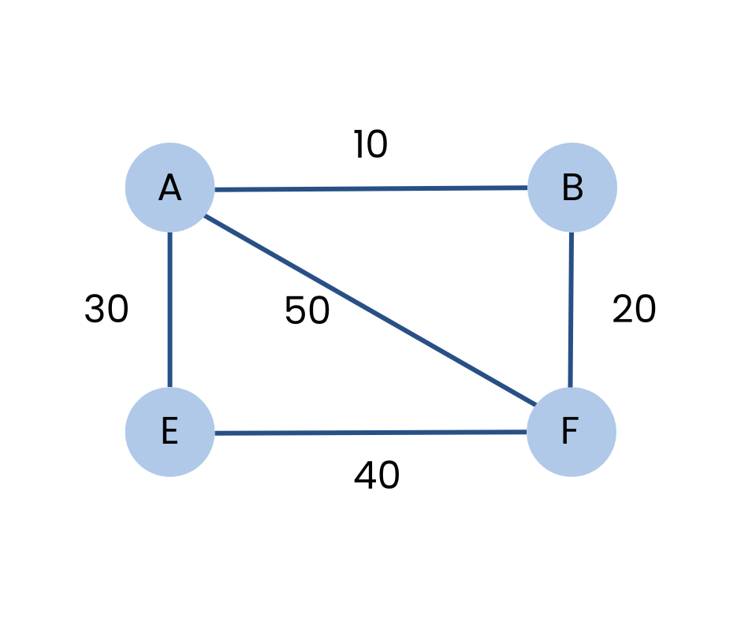

Directed Acyclic Graph (DAG)
A graph in which the edges are already specified with suitable weight is known as a weighted graph.
Weighted graphs can be further classified as directed weighted graphs and undirected weighted graphs.

Applications
- Spanning trees:Weighted graphs are used to find the minimum spanning tree from graph which depicts the minimal cost to traverse all nodes in the graph.
- Network Routing:In computer networks, where weights indicate bandwidth or latency, allowing optimized path selection.